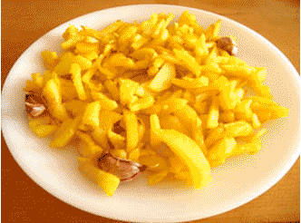

Patatas Fritas
Receta de patatas fritas caseras.

Ingredientes
- 3 ó 4 patatas (300g.)
- 4 dientes de ajo
- Aceite de oliva
- Sal
Elaboración (Pasos)
- Calentar aceite en una sartén.
- Añadir la patatas cortadas, la sal y los ajos.
- Freir al gusto.
- Servir en platp.